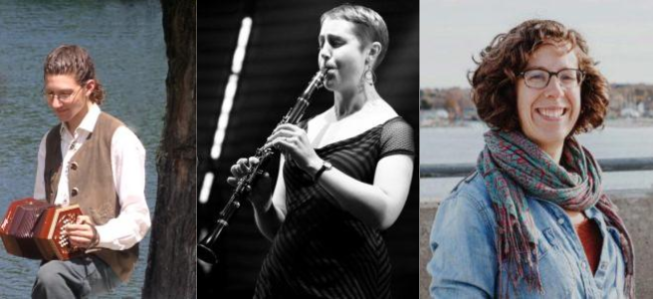
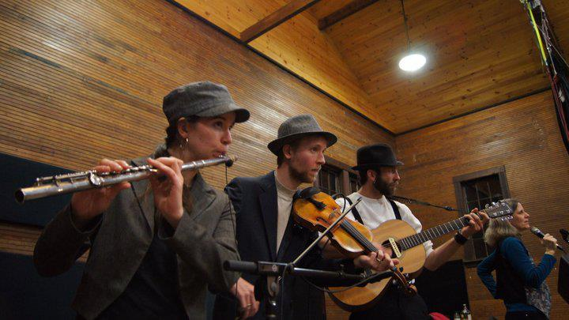
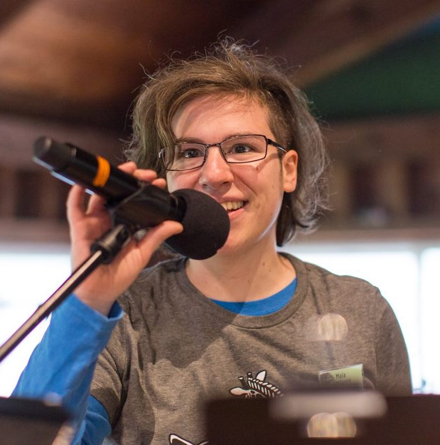
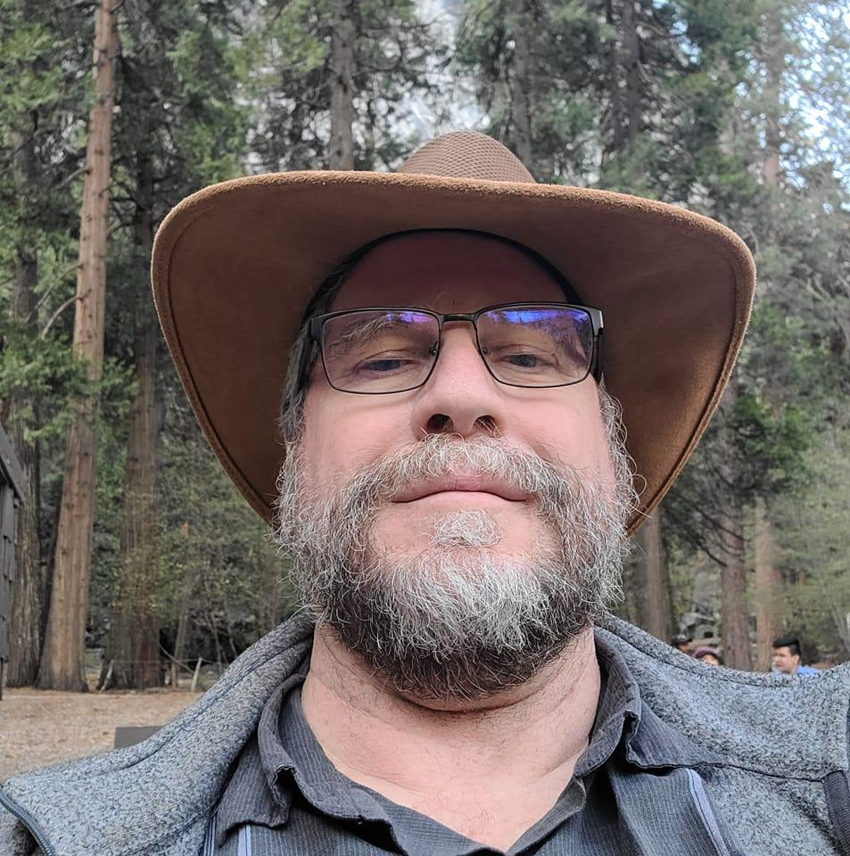

Talent
Aaron Marcus, Anna Patton, and Emily Troll
have all played at Queer Contra Dance Camp previously, Aaron (piano, concertina, foot percussion) with Giant Robot Nano and Frost and Fire, Anna (clarinet) with Elixir, and Emily (fiddle) with Anadama. After playing together in various gigs on the east coast, they all wanted to come back to Aptos just as much as we want to have them. Together they can make the most of their richly eclectic background, exuberant energy, and musical passion.


Mean Lids
bring their eponymous hats and mean musical skills from Illinois to our dance floor. Inspired by wide ranging styles including Cajun, Celtic, and old-time, Ben Smith (fiddle & banjo), Miriam Larson (flute & jawharp), and Matt Turino (fiddle & guitar), create an organic blend with grit, pulse, and sweetness. Their twisted tunes, long lonesome sounds, and kickin’ grooves have been delighting dancers for the past ten years.Chris Ricciotti
is the original gender-free contra caller. Chris single-handedly founded LCFD, the first regular gender-free contra dance. Chris is still a leader in the community and has only become more beloved as a caller. A longtime friend and supporter of Queer Contra Dance Camp, Chris has contributed to our traditions of high tea, pop contra, and English Country Dance in the past. Now Chris is back as a contra caller to share Chris's breadth of dance knowledge, innovative spirit, and passion with us.

Maia McCormick
is a contra dance caller and choreographer from New York City. She’s been calling dances for the last 10 years around the Northeast and across the country at festivals, weekends, and regular dances alike. She writes dances that are both compelling and idiomatic, is an advocate for safer and more inclusive dance spaces, and ran our popular “Folk Singing for Today’s Folks” workshop at Queer Contra Dance Camp in 2018. This year, she’s back to spread more joy, dance, and unrepentant puns.Nick Cuccia
has provided dancer- and musician-friendly sound at numerous events throughout northern California during the past twenty-five years, including BACDS Family Week, English Week, Fall Frolick, and Playford Balls and camps; NBCDS Mad Robin Balls, SCDS Echo Summit weekend, RSCDS-SF Valentines' Ball and Asilomar Scottish Country Dance Weekend & Workshop, and every Queer Contra Dance Camp. Nick also calls contras and English country dances throughout central and northern California.

Our talent provides a full weekend of contra dance, with a second track of dance and singing workshops lead by the community during the day. Specifics will be announced as camp approaches, but workshop topics in the past have included waltz, consent conversations, English country dance, pop contra, traditional folk songs, playing music for contra, and much more. Sessions targeted to beginning and advanced dancers are also included.